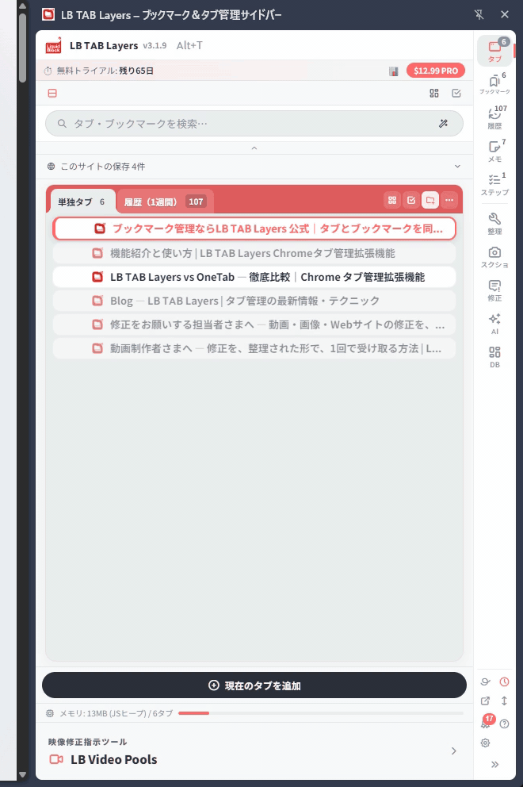

テーマ PRO
40 種の配色から選ぶ（無料は 3 種）
場所：設定 › 見た目 › テーマ
設定 › 見た目 › テーマ で、40 種の配色から選べます（無料版は 3 種）。選んだ配色は、ダッシュボードなどの画面にも反映されます。PRO では、背景・文字・アクセントの 3 色から、自分の配色も作れます。

40 種の配色から選ぶ（無料は 3 種）
場所：設定 › 見た目 › テーマ
設定 › 見た目 › テーマ で、40 種の配色から選べます（無料版は 3 種）。選んだ配色は、ダッシュボードなどの画面にも反映されます。PRO では、背景・文字・アクセントの 3 色から、自分の配色も作れます。
背景・文字・アクセントの 3 色から、自分の配色を作る
場所：テーマの一覧の先頭
テーマの一覧の先頭から、背景・文字・アクセントの 3 つの色を選んで、自分の配色を作れます。PRO の機能です（お試し期間中は使えます）。
文字のくっきりさ・大きさ・行の高さ・太さ・色調
場所：設定 › 見た目 › 文字と行
設定 › 見た目 › 文字と行 で、文字のくっきりさ・大きさ・行の高さ・太さ・色調を変えられます。見やすい大きさに合わせられます。

設定の項目を、言葉で探す
場所：設定の上
設定の上の欄に言葉を入れると、設定の項目を探せます。どこにあるか分からない設定を、すぐ見つけられます。
まとめて開くときのタブグループ・お知らせ・便利な表示の入り切り
場所：設定 › 使い方
設定 › 使い方 で、まとめて開くときに Chrome のタブグループにするか、お知らせを出すか、便利な表示を使うかを、入り切りできます。
LB TAB Layers は、Chrome に無料で追加できます。入れたら、Alt+T で、いつでも開けます。
Chrome に無料で追加